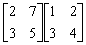
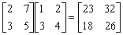

二階矩陣乘法
程式編寫日期: 2006年11月9日
程式可以計算一個 2 × 2矩陣及另一個 2 × n 矩陣的乘積，其中 n 是正整數。
程式(19步)
| 1 | ENT | 2. | Kin 5 | 3. | × | 4. | Kout 1 | 5. | + |
| 6. | ENT | 7. | Kin 6 | 8. | × | 9. | Kout 2 | 10. | = |
| 11. | HLT | 12. | Kout 5 | 13. | × | 14. | Kout 3 | 15. | + |
| 16. | Kout 6 | 17. | × | 18. | Kout 4 | 19. | = | 20. |
LRN 模式輸入程式(供 fx-3600PV及fx-3800P使用，程式長度: 19步 )
| ENT 0 | Kin 5 | × | Kout 1 | + |
| ENT 0 | Kin 6 | × | Kout 2 | = |
| HLT | Kout 5 | × | Kout 3 | + |
| Kout 6 | × | Kout 4 | = | MODE . |
例題: 計算以下二階矩陣的乘積。

按 2 Kin 1 7 Kin 2 3 Kin 3 4 Kin 4 (第一個矩陣，由左至右，上至下輸入)
再按 P1 1 RUN 3 RUN (輸入第二個矩陣，第一欄的數據，顯示23) RUN (顯示18)
再按 P1 2 RUN 3 RUN (輸入第二個矩陣，第二欄的數據，顯示32) RUN (顯示26)
所以
